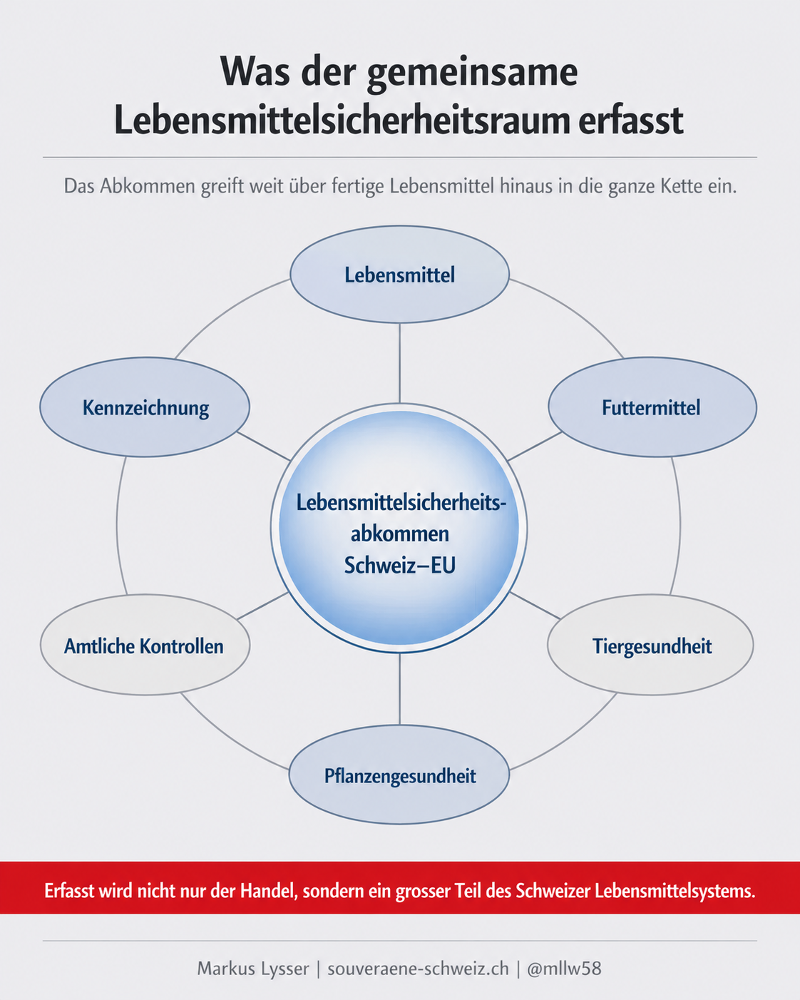
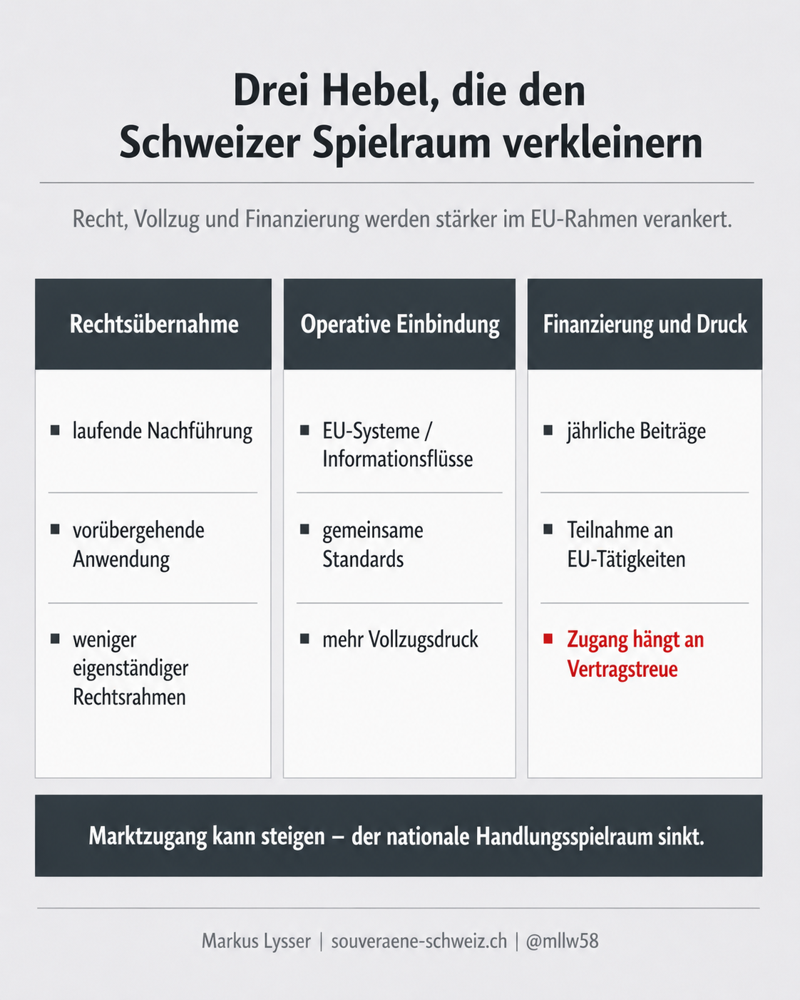
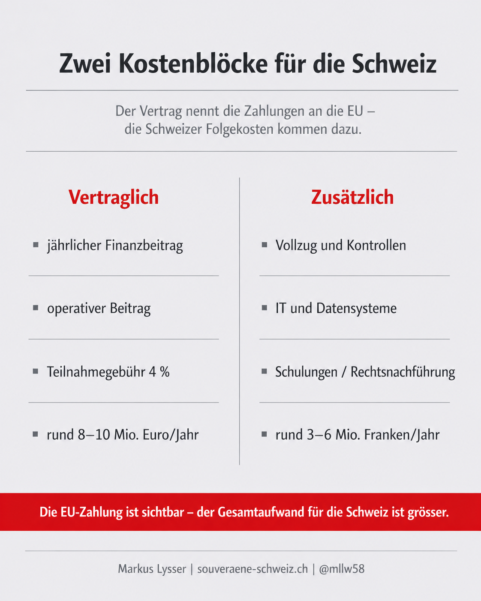

Ein technisches Dossier mit politischer Tragweite
Das Lebensmittelsicherheitsabkommen klingt nach Fachrecht. Tatsächlich greift es tief in Landwirtschaft, Lebensmittelrecht, Kontrollen, Datenflüsse, Tiergesundheit, Pflanzenschutz, Tierschutz und Behördenvollzug ein.
Der Vertrag erweitert das bestehende Agrarabkommen auf die gesamte Lebensmittelkette und schafft einen gemeinsamen Lebensmittelsicherheitsraum zwischen der Schweiz und der EU. Das soll den Warenverkehr erleichtern und gleiche Rahmenbedingungen schaffen. Gleichzeitig bindet sich die Schweiz enger an EU-Rechtsakte, EU-Systeme und gemeinsame Auslegungslogik.
Mehr Planbarkeit im Handel hat einen Preis: mehr Rechtsübernahme, mehr Vollzug, weniger eigenständiger Spielraum.
Die wichtigsten Punkte
Die ganze Lebensmittelkette ist betroffen.
Es geht nicht nur um fertige Lebensmittel, sondern auch um Produktion, Verarbeitung, Vertrieb, Futtermittel, Tiergesundheit, Tierschutz, Pflanzengesundheit, Pflanzenschutzmittel, Pflanzenvermehrungsmaterial, Rückstände, Kontaminanten, Kennzeichnung und amtliche Kontrollen.
Die Schweiz wird enger an den EU-Binnenmarkt gebunden.
Wenn sie ihre Verpflichtungen erfüllt, wird sie im erfassten Bereich nicht mehr wie ein Drittstaat behandelt. Das erleichtert den Warenverkehr, erhöht aber auch die Bindungswirkung.
EU-Recht wird laufend nachgeführt.
Der Vertrag ist nicht auf einen einmaligen Rechtsstand angelegt. Neue einschlägige EU-Rechtsakte sollen laufend integriert werden. In bestimmten Fällen ist sogar eine vorübergehende Anwendung vorgesehen.
Die Schweiz bezahlt jährlich.
Sie beteiligt sich an Agenturen, Informationssystemen und weiteren Tätigkeiten der EU. Der Beitrag besteht aus einem operativen Beitrag und einer Teilnahmegebühr von 4 Prozent.
Die direkten Kosten sind sichtbar, die Folgekosten nicht.
Der Vertrag regelt die Zahlungen an die EU. Nicht beziffert werden die zusätzlichen Kosten in der Schweiz für Vollzug, IT, Kontrollen, Schulungen und Rechtsnachführung.
Worum es konkret geht
Das Abkommen ist kein kleiner technischer Zusatz. Es zieht einen grossen Teil des Lebensmittelsystems in einen gemeinsamen Rechts-, Kontroll- und Vollzugsraum.
Für die Schweiz ist das der eigentliche Punkt: Ein Bereich, der bisher wesentlich national organisiert war, wird enger in einen EU-geprägten Rahmen eingebunden.

Was ist der Nutzen
Der Nutzen liegt vor allem beim Handel, bei der Rechtssicherheit und beim Krisenmanagement.
Wenn Standards, Kontrollen und Datenflüsse kompatibler werden, sinkt das Risiko unterschiedlicher Anforderungen. Für exportorientierte Unternehmen kann das Vorteile bringen.
Auch bei verunreinigten Lebensmitteln, Tierseuchen oder phytosanitären Problemen kann ein gemeinsamer Raum schneller reagieren als zwei getrennte Systeme. Gerade dafür ist der Vertrag auf gleichzeitige Anwendung und gemeinsame Abläufe angelegt.
Wo liegen die Risiken
Erstens: Die Schweiz bindet sich an laufende Rechtsübernahme. Der Vertrag schafft keinen ruhigen Endzustand, sondern einen Mechanismus zur ständigen Nachführung.
Zweitens: Die vorübergehende Anwendung ist politisch heikel. Die praktische Anpassung kann einsetzen, bevor der innenpolitische Prozess vollständig abgeschlossen ist. Das erhöht Tempo und Druck dort, wo demokratische Kontrolle besonders wichtig wäre.
Drittens: Der Referenzrahmen verschiebt sich. Auch wenn Schweizer Behörden vollziehen, wird die Auslegung stärker von EU-Rechtslogik geprägt. Das ist nicht nur juristisch relevant, sondern politisch.
Viertens: Der föderale Spielraum wird kleiner. Die Kantone bleiben im Vollzug wichtig. Wenn aber Inhalte, Fristen, Datenflüsse und Standards stärker extern geprägt werden, wird der Spielraum enger.
Fünftens: Die Kosten sind nach oben offen. Der Vertrag enthält keine fixe Gesamtsumme, sondern eine Berechnungslogik. Ein Kostendeckel ist nicht vorgesehen.

Was kostet das Abkommen
Die Schweiz bezahlt einen jährlichen Finanzbeitrag an EU-Agenturen, Informationssysteme und andere Tätigkeiten, an denen sie teilnimmt.

Rund 8 bis 10 Millionen Euro pro Jahr an vertraglichen Kosten
Zusätzlich entstehen in der Schweiz weitere Kosten für Vollzug, IT, Kontrollen, Schulungen, Rechtsnachführung und administrativen Aufwand bei Betrieben.
Zusätzlich rund 3 bis 6 Millionen Franken pro Jahr an Folgekosten in der Schweiz
Politisch entscheidend ist: Der Vertrag macht die Zahlungen an die EU sichtbar. Die gesamten Folgekosten in der Schweiz bleiben dagegen offen.
Wenn die Schweiz nicht fristgerecht bezahlt, kann die EU die Beteiligung an der betreffenden Tätigkeit aussetzen. Der Zugang zu Systemen hängt also direkt am Zahlungsmechanismus.
Ausnahmen: wichtig, aber begrenzt
Der Vertrag enthält Ausnahmen, etwa bei gentechnisch veränderten Organismen und in bestimmten Fragen des Tierwohls.
Diese Ausnahmen sind politisch wichtig. Sie zeigen aber auch: Die Schweiz kann ihre Sonderwege nicht einfach voraussetzen, sondern muss sie ausdrücklich absichern.
Die Ausnahmen sind deshalb kein Beweis voller Souveränität. Sie sind Sonderregeln innerhalb eines gemeinsamen Systems.
Detailanalyse
Die Detailanalyse zeigt genauer:
- wie weit der Geltungsbereich reicht
- wie die Rechtsübernahme funktioniert
- wo die Ausnahmen liegen
- wie der Kostenmechanismus aufgebaut ist
- welche Folgen für Bund, Kantone und Betriebe entstehen
Fazit
Das Lebensmittelsicherheitsabkommen ist kein harmloses Technikdossier.
Es betrifft die ganze Lebensmittelkette – vom Acker bis zum Teller, von der Tiergesundheit bis zur Kennzeichnung, von kantonalen Kontrollen bis zu EU-Informationssystemen.
Die Schweiz kann dadurch mehr Rechtssicherheit und besseren Marktzugang gewinnen.
Der Preis ist aber hoch: laufende Rechtsübernahme, stärkere Einbindung in EU-Systeme, jährliche Zahlungen und zusätzlicher Vollzugsaufwand.
Die politische Kernfrage lautet deshalb nicht, ob Lebensmittelsicherheit wichtig ist.
Wie viel eigenständige Schweizer Rechtssetzung ist die Schweiz bereit aufzugeben, um Teil eines gemeinsamen EU-Lebensmittelsicherheitsraums zu werden?
Quellen und Vertiefung
- Quellenangaben folgen.